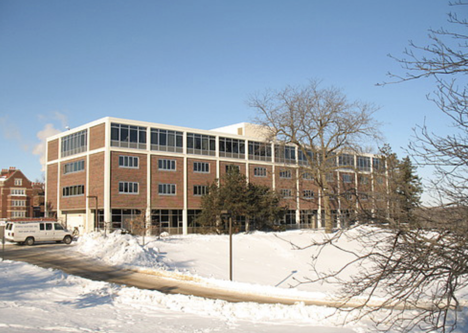
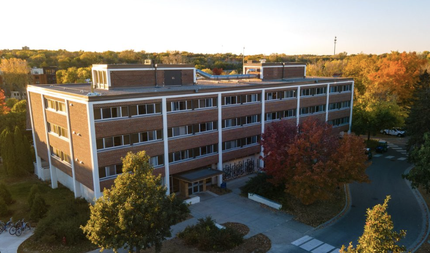

Myers (1958) and Musser (1958) were built by architects Magney, Tusler, and Setter of Minneapolis. The dorm came at a time in which Carleton transitioned its housing model, with all dorms being the same amount of money. To openly represent this egalitarianism, all Myers and Musser dorms were built to be the exact same - a way of saying that the time of partiality is over.

The architectural style is akin to the work of Mies Vander Rohe, and is directly inspired by the dorms of Illinois Tech. Myers and Musser are Modern in styling, with a lack of ornamentation and extensive glass walls.
← Back to Map